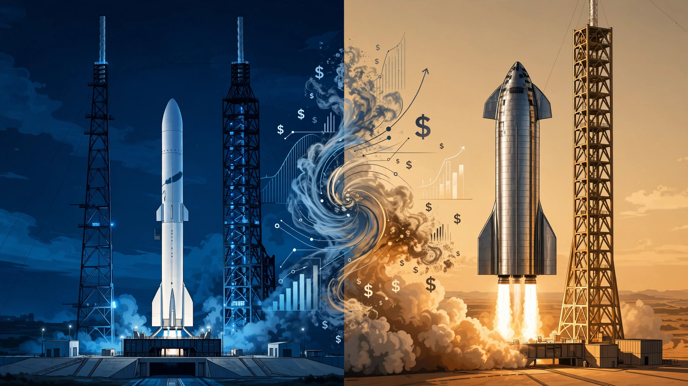

Blue Origin Has Spent $28 Billion to Launch 3 Rockets. Investors Just Valued It at $130 Billion. SpaceX Spent Less and Built an Empire.
Jeff Bezos invested $9.3 billion per successful orbital launch over 26 years. SpaceX achieved the same milestone for $20 million each. By cross-referencing total capital deployed, contract backlogs, revenue multiples, and launch cadence across all three publicly comparable rocket companies, we calculate that Blue Origin's $130 billion valuation prices in 24 consecutive years of flawless execution — starting from a company whose only launchpad exploded two months ago.

$9.3 billion per launch. Three launches in 26 years. That is what each of Blue Origin's orbital missions cost when you divide the total capital Jeff Bezos has poured into the company since founding it in September 2000. On Wednesday, investors signaled their belief that this number is a bargain by pricing Blue Origin at $130 billion in its first-ever outside funding round, making a 26-year-old rocket company that has launched fewer orbital missions than SpaceX completes in a slow week worth more than Starbucks, Lowe's, or Goldman Sachs. Read that again.
The round, reported by NYT DealBook and confirmed by CNBC, will raise $10 billion. Coatue Management leads with a $4 billion commitment. Bezos adds $2 billion more, bringing his cumulative investment to roughly $30 billion across 26 years. Another $4 billion will come from institutional investors whose names have not been disclosed.
This is a company that exploded its only operational launchpad in a May static fire test, lost a customer satellite to an upper-stage failure in April, and laid off 10% of its workforce in February 2025. It has no recurring revenue product, no broadband constellation, and no public financial disclosures beyond what third-party estimators can piece together. Investors looked at all of this. Every failure, every delay, every missing revenue line. And they wrote checks valuing Blue Origin at 7.4% of SpaceX, which generates $18.7 billion in annual revenue, operates 9,600 satellites, and launched 170 rockets last year.
The Investment Efficiency Gap Nobody Discusses
To understand how extraordinary the $130 billion figure is, compare the capital efficiency of every company that has reached orbit and attracted significant outside investment.
| Company | Total Capital In | Orbital Launches | $/Launch | Valuation | Val/Launch |
|---|---|---|---|---|---|
| Blue Origin | $28B (Bezos) | 3 | $9.33B | $130B | $43.3B |
| SpaceX | ~$12B (pre-IPO) | ~600 (cumulative) | $20M | $2.0T | $3.3B |
| Rocket Lab | ~$1.8B (raised) | ~55 (Electron) | $33M | $50B | $909M |
Blue Origin has spent 467 times more capital per orbital launch than SpaceX. Put differently, this is not a matter of degree but a difference in kind: one company built a rocket, launched it three times, and blew up its pad; the other built a rocket, launched it hundreds of times, landed the booster on a drone ship until drone-ship landings became boring, then built a broadband constellation that generates $11.4 billion per year in recurring revenue and serves 10.3 million subscribers in 160 countries.
SpaceX's pre-IPO fundraising totaled approximately $12 billion across multiple rounds from 2002 to 2026, and for that $12 billion investors received a company that completed its 600th orbital mission somewhere in mid-2025, built a satellite internet service with 10.3 million subscribers, and went public at $1.75 trillion. Bezos invested $28 billion of his personal fortune, more than double SpaceX's total outside capital, and produced three orbital flights.
What $130 Billion Actually Buys
Blue Origin's estimated revenue for 2026 is approximately $2.8 billion, according to RocketReach's industry modeling. At $130 billion, that implies a valuation multiple of 46 times trailing revenue. For context:
| Company | Revenue (2025) | Valuation | EV/Revenue | Revenue Type |
|---|---|---|---|---|
| SpaceX | $18.7B | $2.0T | 107x | 61% recurring (Starlink) |
| Rocket Lab | $602M | $50B | 83x | Launch + space systems + Iridium |
| Blue Origin | ~$2.8B (est.) | $130B | 46x | Government contracts + launch |
The 46x multiple looks surprisingly reasonable next to SpaceX's 107x and Rocket Lab's 83x. Deceptive, though. It ignores the revenue composition that justifies those premiums.
SpaceX's 107x is anchored by Starlink, which generated $11.4 billion in 2025 revenue and $4.4 billion in operating profit, growing subscriber count by approximately 100% year-over-year. This is a subscription business with marginal cost approaching zero per additional user, protected by a network of 9,600 satellites that would cost any competitor at least $15-20 billion to replicate. SpaceX's launch business contributes only $4.1 billion, or 22% of total revenue, growing 8% year-over-year, a perfectly fine business but not one that commands a 107x multiple on its own.
Rocket Lab's 83x reflects the $8 billion Iridium acquisition, which will add satellite constellation revenue to its existing launch and space-systems business and move its overall revenue mix closer to the SpaceX model that the market has shown it is willing to pay a premium for.
Blue Origin's $2.8 billion in estimated revenue comes almost entirely from government contracts and launch services, revenue that is lump-sum, milestone-gated, and does not compound. There is no subscription. No constellation. No marginal-cost-zero business behind the 46x multiple. What the market is actually paying for is the expectation that Blue Origin will build one.
The Contract Backlog That Doesn't Add Up
Blue Origin's most commonly cited growth catalysts are its government and commercial launch contracts. Taken individually, each looks significant. Cross-referenced against the timeline and the company's demonstrated execution rate, the picture changes sharply.
| Contract | Value | Launches | Timeline | Annual Revenue |
|---|---|---|---|---|
| NASA Artemis HLS | $3.4B (NASA share) | N/A (lander dev) | Through ~2029 | ~$680M/yr |
| Amazon Leo | $816M-$1.32B | 12 (+15 option) | 5+ years | ~$163-264M/yr |
| NSSL Phase 3 | ~$1.8B (est.) | 7 | FY27-FY32 | ~$360M/yr |
| NASA rover delivery | $188M | 1-2 | ~2028 | ~$94M/yr |
| NASA commercial station | $130M | N/A | Ongoing | ~$26M/yr |
| Total identified | $6.3-6.9B | ~21-29 | 5-7 years | $1.0-1.4B/yr |
The total identified contract backlog generates roughly $1.0-1.4 billion per year in revenue across the delivery period. This is less than half of Blue Origin's estimated current revenue of $2.8 billion, which means the remaining $1.4-1.8 billion comes from smaller contracts, engine sales to United Launch Alliance for its Vulcan rocket program, and miscellaneous revenue sources whose details remain undisclosed because Blue Origin has never published audited financials.
Critically, the Amazon Leo launches require a functioning launchpad and a proven rocket, and Blue Origin's only orbital pad at Cape Canaveral's Launch Complex 36 was destroyed in the May 2026 explosion, leaving the company with no operational site from which to fulfill its most important contracts. CEO Dave Limp promises flights "before the end of this year. But reconstruction involves not just repair but redesign, and that pad was Blue Origin's only orbital launch site. Amazon's 3,236-satellite Leo constellation — the existential counterweight to Starlink — cannot begin full deployment until Blue Origin can launch reliably and frequently.
Bezos vs. the S&P 500
Jeff Bezos began publicly funding Blue Origin with annual Amazon stock sales in 2017, starting at $1 billion per year and escalating over time. By multiple estimates including the Financial Times's reporting that Blue Origin has spent approximately $28 billion since inception, his total investment now stands at roughly $28 billion.
At $130 billion, Bezos keeps roughly 80% after dilution. His stake: about $104 billion. A 3.7x return on $28 billion. Over 26 years. A 5.2% compound annual growth rate.
By comparison, a passive S&P 500 index delivered approximately 7.5% annualized from January 2000 through July 2026, after surviving the dot-com crash, the 2008 financial crisis, and the 2022 bear market. A $28 billion investment in a passive index fund, deployed at the same cadence as Bezos's Blue Origin investments, would today be worth substantially more than $130 billion.
Unfair comparison? Of course. Venture upside is nonlinear, risk profiles are categorically different, and the optionality of owning a launch platform has no S&P 500 equivalent. But it is precisely the comparison that investors making the $130 billion bet are implicitly rejecting. They believe the nonlinear upside is ahead, not behind.
The SpaceX Gravity Well
Blue Origin's funding round does not exist in isolation. It exists in the gravitational field of SpaceX's June 12 IPO, which raised $85.7 billion at a $1.75 trillion valuation, the largest initial public offering in history. SpaceX's market capitalization briefly exceeded $2 trillion and is now trading near $1.85 trillion, or about $149 per share.
SpaceX's debut created an investable space sector overnight. Before June 12, institutional investors who wanted exposure to orbital launch had exactly two liquid options: Rocket Lab (then a $30 billion company) and a handful of smaller players. After SpaceX went public, "space" became a sector with a $2 trillion anchor stock, a $50 billion mid-cap, and an entire ecosystem of suppliers, satellite operators, and component makers suddenly deemed worthy of coverage. Capital rushed in.
Blue Origin's $130 billion valuation is, in a very direct sense, the SpaceX IPO's aftershock, the inevitable consequence of institutional capital discovering that the space sector now has a $2 trillion anchor stock and desperate for any way to get more exposure. The Barron's analysis pointed out that Blue Origin trades at an implied 100-200 times estimated revenue, a multiple that only makes sense if investors believe Blue Origin's addressable future looks directionally like SpaceX's present: launch services plus a constellation business plus government contracts plus whatever orbital infrastructure the next two decades demand.
But SpaceX built Starlink while it was launching 96 to 170 rockets per year. Blue Origin needs to build its equivalent, whether that is Amazon Leo launch services, Blue Ring orbital logistics, or something not yet announced, while operating from a destroyed pad with a rocket that has flown three times.
What This Does Not Prove
The investment efficiency comparison between Blue Origin and SpaceX carries several structural caveats that bias the analysis against Blue Origin.
First, Bezos's $28 billion funded the development of multiple programs beyond New Glenn: the BE-4 engine (now powering ULA's Vulcan rocket), the Blue Moon lunar lander, the Blue Ring orbital transfer vehicle, and years of New Shepard suborbital flights. SpaceX's $12 billion in outside funding was supplemented by billions in NASA and Department of Defense contract revenue that effectively subsidized Falcon 9 development. Comparing raw capital inputs without adjusting for revenue-funded R&D understates SpaceX's true total cost, and substantially so.
Second, Blue Origin is at the beginning of its orbital launch curve. SpaceX launched Falcon 9 for the first time in June 2010 and did not reach a cadence of more than 20 flights per year until 2020, a full decade later. Blue Origin's New Glenn first flew in January 2025. It is 18 months into its operational life. Comparing its three launches to SpaceX's cumulative 600 is inherently unfair, in the same way that comparing a freshman's test scores to a PhD candidate's publication record tells you very little about the freshman's potential.
Third, the $2.8 billion revenue estimate for Blue Origin is exactly that, an estimate from a third-party database, and Blue Origin has never disclosed financials. The actual revenue could be higher if undisclosed engine sales and development contracts are included, or lower if milestone-based payments from NASA have not yet been triggered.
Fourth, the pad explosion, while a significant setback, destroyed infrastructure rather than technology. Blue Origin has demonstrated the ability to launch, land, and refly a New Glenn booster, and while the pad can be rebuilt with time and money, the engineering knowledge embedded in those three flights cannot be unbought or replicated by competitors who have not yet reached orbit. SpaceX's own history includes a September 2016 pad explosion at LC-40 that destroyed a Falcon 9 and its payload; SpaceX returned to flight four months later and went on to launch 18 missions the following year.
The Case That Scares the Bears
Here is what keeps the bears up at night. Blue Origin owns the second-most-capable orbital launch platform in the Western world at a time when demand for launch capacity is about to explode.
Amazon's Leo constellation requires 3,236 satellites. At 48 satellites per New Glenn launch, that is a minimum of 67 launches to complete the constellation. SpaceX, Amazon's direct broadband competitor, is not going to launch Leo satellites on Falcon 9; ULA's Vulcan has contracted 38 Kuiper launches but cannot match New Glenn's payload capacity; and Arianespace has contracted 18 Ariane 6 launches but faces its own cadence constraints and has not yet demonstrated the flight rate Amazon needs.
This means Blue Origin has a captive customer in its founder's $10 billion-plus satellite venture, an arrangement with no parallel in commercial aerospace. If Amazon Leo reaches even a fraction of Starlink's subscriber count, the demand for New Glenn launches becomes self-reinforcing: more satellites require more launches, more launches drive down per-launch cost, lower costs justify more satellites.
Beyond Leo, the U.S. government is spending $13.7 billion on NSSL Phase 3 launch contracts precisely because it wants assured access to space through multiple providers. SpaceX dominance is a feature for launch efficiency and a genuine risk for national security, which is precisely why the Pentagon is willing to pay a premium for redundancy. Blue Origin's 7 NSSL launches may seem modest next to SpaceX's 28, but they represent the Pentagon's explicit bet that maintaining a second high-cadence orbital launch provider is strategically necessary for national security, even if that provider costs more per launch and has a fraction of the flight heritage.
The BE-4 engine business also generates revenue that does not appear on any launch manifest. ULA's Vulcan rocket runs on two BE-4 engines per flight, and ULA is contracted for 19 NSSL launches plus commercial missions. Every Vulcan flight is a Blue Origin engine sale, revenue earned without the risk of operating its own rocket.
What You Can Do With This Information
If you're considering investing in space: Understand what the $130 billion valuation is pricing. It is not pricing Blue Origin's current capabilities, which amount to a grounded rocket and a destroyed pad. It is pricing the optionality of a second Western orbital platform backed by the world's second-richest person and anchored by a captive $10 billion satellite constellation customer. If you believe that optionality is worth $130 billion, the implied bet is that Blue Origin reaches SpaceX's 2020 cadence (26 launches per year) by approximately 2030 while simultaneously building a recurring-revenue business.
If you hold SpaceX stock: Blue Origin's funding round is bullish for SpaceX in the short term. It validates the space sector's valuation framework at a ratio most analysts consider generous to Blue Origin. Translation: SpaceX is undervalued, not Blue Origin overvalued. The risk is longer term: if Blue Origin achieves launch cadence and Amazon Leo achieves scale, Starlink's monopoly on satellite broadband ends.
If you work in aerospace supply chains: $10 billion in fresh Blue Origin capital means expanded procurement of composites, avionics, propulsion components, and launch infrastructure construction. Blue Origin's Florida operations already employ 4,000 people and have invested $3 billion in facilities across 11 sites. The funding round signals that these numbers will grow substantially, particularly as the company rebuilds LC-36 and potentially begins construction of a second pad.
If you work at Amazon: Amazon Leo's success now depends even more directly on Blue Origin's execution. The 24-launch contract between the two Bezos companies is the largest commercial launch commitment in history outside of Starlink's internal missions. Watch the LC-36 reconstruction timeline: if Blue Origin cannot launch by Q4 2026, Leo deployment falls behind Starlink's Gen3 satellite rollout, and the competitive window narrows precipitously.
Where This Leaves Us
Jeff Bezos invested $28 billion over 26 years to build a company that has launched three rockets to orbit, landed two boosters, lost one customer satellite, and exploded its only launchpad. Investors just valued that company at $130 billion, more than Goldman Sachs or Starbucks, in its first-ever outside funding round. The capital efficiency gap with SpaceX is 467 to 1 measured by investment per orbital launch, while the valuation gap stands at 13.5 to 1 measured by market capitalization, a ratio that implies investors expect Blue Origin to close the operational chasm within a decade. Is this irrational exuberance or rational optionality pricing? It depends on a single variable: can Blue Origin launch rockets reliably and often enough to matter before the window closes? SpaceX answered that question a decade ago, and the market rewarded it with a $1.75 trillion IPO. Blue Origin's answer is still sitting on a reconstructed launch pad in Cape Canaveral, waiting for a countdown that has not yet been scheduled.